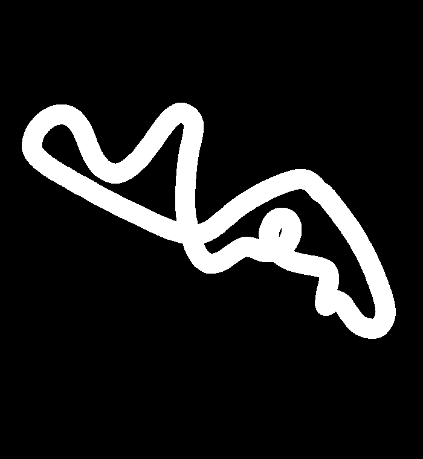

Observation
速度、位置、向き、次のチェックポイント、壁までの距離、路面、進捗などを受け取ります。
obs.rays['front']AUTONOMOUS DRIVING / COURSE 11
鈴鹿コース11を題材にした自動運転シミュレーターの紹介サイトです。ここでは車両を操作するのではなく、コース、観測情報、制御の考え方を画像と説明でまとめています。

COURSE OVERVIEW
コース11は、車の中心位置と壁までの距離をもとに、次のチェックポイントへ進む制御を考えるための舞台です。画像は添付ツールに含まれていたコースマスクを使用しています。
HOW IT WORKS
シミュレーターの参加者が編集するのは、毎フレーム渡される観測情報から操作を返す制御ロジックです。
速度、位置、向き、次のチェックポイント、壁までの距離、路面、進捗などを受け取ります。
obs.rays['front']観測した情報を使い、ステアリング・アクセル・ブレーキの値を毎フレーム計算します。
control(obs) → Action完走・タイム・衝突回数・平均速度・滑らかさ・エラー回数などで走行結果を確認します。
time / crashes / smooth路面も観測対象。 road / ice / mud / boost の違いで、グリップ・加速・制動・抵抗が変わります。
MEDIA / EXPLANATION
走行シーン：約00:06〜00:39。赤い車の先行、泥道での減速、ブーストでの追い上げを収録。
REFERENCE DOCS
添付されたポータブル版の説明書と制御仕様書を、サイトから読めるようにしています。
NEXT STEP
コース画像の差し替え、走行動画の掲載、独自の説明文への変更など、この紹介ページを用途に合わせて編集できます。
掲載内容を相談する ↗